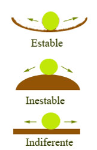

Un cuerpo se encuentra en equilibrio cuando cumple la primera y segunda condición de equilibrio. Sin embargo, dependiendo de cómo reacciona el cuerpo al ser perturbado, existen tres tipos de equilibrio:
1. Equilibrio estable
Ocurre cuando, al desplazar ligeramente el cuerpo de su posición, este tiende a regresar a la posición original.
Se da cuando el centro de gravedad del cuerpo sube al ser movido y luego baja espontáneamente para recuperar su lugar.
Ejemplo: una pelota en el fondo de un cuenco.
2. Equilibrio inestable
Aparece cuando, al desplazar el cuerpo, este se aleja aún más de su posición inicial.
El centro de gravedad baja al moverse, haciendo imposible que regrese por sí solo.
Ejemplo: una pelota sobre la cima de una colina.
3. Equilibrio indiferente (o neutro)
Sucede cuando, al mover el cuerpo, este no tiende ni a regresar ni a alejarse, sino que simplemente queda en una nueva posición de equilibrio.
El centro de gravedad permanece a la misma altura.
Ejemplo: una pelota sobre una superficie plana.
